Final project documentation: the problem, the product, the engineering decisions behind it, and the evidence that they work.
FORM was built by one member, so the table below is not a division of labour between people — it is the set of roles the project actually required, what each one was responsible for, and where the evidence of it lives in the repository.
| Role | Responsibilities | Where to look |
|---|---|---|
| Design and interface | Translated the Figma design system into a Flutter theme (colour, type scale, control shapes), laid out eleven screens, and built the reusable widgets they share. Kept one voice for empty, loading and error states. | lib/screens/, lib/widgets/, lib/theme/ |
| State management | Two ChangeNotifier providers, the derived figures the screens read, the per-account store lifecycle, and the rule that screens read state rather than mutate it. |
lib/providers/ |
| Data layer and schema | The SQLite schema (version 4), the migration that gave every row an owner, the repository that scopes reads and writes to one account, and the statistics file that derives progress. | lib/data/ |
| Authentication | The AuthRepository seam, the local implementation, PBKDF2 hashing off the UI isolate, session restore, sign-out and account deletion. |
lib/auth/, docs/AUTH.md |
| API integration | The wger REST client over http, the JSON-to-model mapping, the network-first/offline-fallback policy, and the loading, success and error states that expose it. |
lib/data/exercise_api_client.dart, exercise_catalog.dart |
| Quality assurance | 293 automated tests across models, providers, persistence and widgets; a hand-built v3 database for the migration test; screenshots rendered as golden files; dart format and flutter analyze kept clean at every commit. |
test/, tool/screenshot_test.dart |
| Git and repository management | Branch pipeline, conventional commit messages, pull requests with review comments, issue tracking, and promotions through staging to master. | Pull requests and issues on GitHub |
| Documentation | README, authentication design note, build guide, branding note, attribution and licences, the DevTools case study, and this paper. | README.md, docs/ |
Because the roles were held by one person, the value of separating them is not
coordination but review: each role produced an artefact the others
could check. The interface role produced screenshots; the QA role compared
them and found that the dashboard and the library disagreed about the week
(Section 6). The API role produced a fallback catalogue; the QA role asserted
that a failed request still renders a usable screen. The data role produced a
migration; the QA role built a version-3 database by hand and migrated it,
because a test that rewinds user_version on a current database
only proves that the migration runs, not that it is correct.
Work moved through four branches: feat/* for features,
dev as the integration branch, staging for what is
about to be released, and master for what was released. Every
feature arrived as a pull request with review comments on the lines that
carried a decision, not on formatting. Every commit was required to be green
on its own — formatter, analyzer and the full test suite before the commit
was made — so that a bisect never lands on a broken tree.
Strength training only works if the load goes up, and the load can only go up if the lifter knows what it was last time. That single fact is the whole problem: the numbers that matter are the ones nobody can remember.
Progressive overload — doing a little more than last time — is the mechanism by which training produces strength. It requires a comparison: this week's bench press against last week's. Most people training in a gym carry that comparison in their head, or in a notes app, or on a paper card that stays in the car. Memory is unreliable under fatigue, and a note that records “bench 3×8” without the weight cannot answer the only question the next set asks.
The apps that solve this tend to solve several other things at once. They ask for an account before showing a screen, sync to a cloud the user cannot inspect, fill the dashboard with step counts and calorie estimates, and add social surfaces that turn a training log into a feed. Each addition is another thing that can be wrong, another number that was invented rather than measured, and another reason the app needs a network to open.
Existing trackers are either heavy or thin. The heavy ones require an account and a cloud, which makes an offline demo impossible; the thin ones are note fields with a stopwatch, which cannot compute a record or a weekly comparison. Both leave the same gap: a fast log, a truthful summary, and a progress view derived from what was actually performed.
FORM is for the beginner-to-intermediate lifter training three or four times a week, who wants to log a session in under a minute and see an honest picture of the last month. It is also for the privacy-minded user who does not want an account to lift, and for the student who needs the app to work on a phone with no data plan. All three pull in the same direction: local first, account optional, no invented numbers.
FORM is a Flutter application for logging strength training and reading progress from the log. It ships empty, works offline, and every figure it prints can be traced back to a session the user recorded.
Repository: https://github.com/swcidd/form — public, with the full commit history, pull requests and reviewed changes.
The app has eleven screens. A first launch offers a welcome with three ways in: create an account, sign in, or continue offline as the device account. Behind that front door is a shell with five destinations — Home, Progress, Workout, Library and Profile — plus three screens reached from a session: the workout detail, the set logger and the summary.
A session is a plan: exercises, each with sets of reps and weight. The user ticks sets as they are performed, and the session finishes when the last set is ticked. Home shows the session to walk into next, the week's target and the most recent sessions. Progress derives records, volume and consistency from finished sessions only. The Library holds the user's rotation and a searchable catalogue of exercises, read from the public wger API when the device is online and from a bundled set when it is not.
Only finished sessions count, and inside them only completed sets. A set that was planned and never ticked is work nobody did; counting it would let a routine nobody performed move every number in the app.
Screenshots are rendered from the app's own widgets by
tool/screenshot_test.dart with a sample account loaded. FORM ships
with no training data: the empty-account screenshot is what a fresh install
shows.
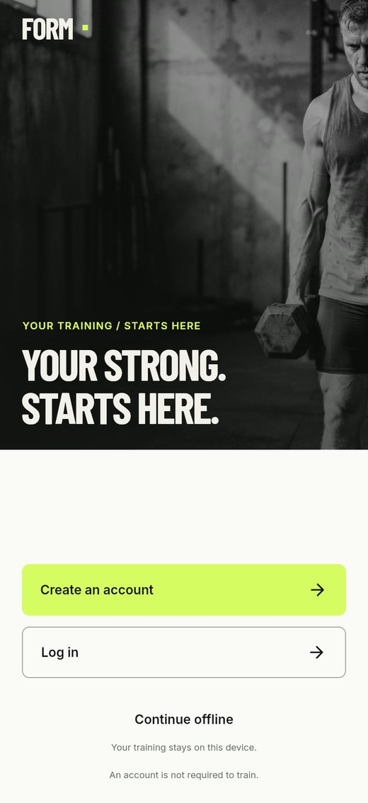 WelcomeThree ways in; the third needs no account. |
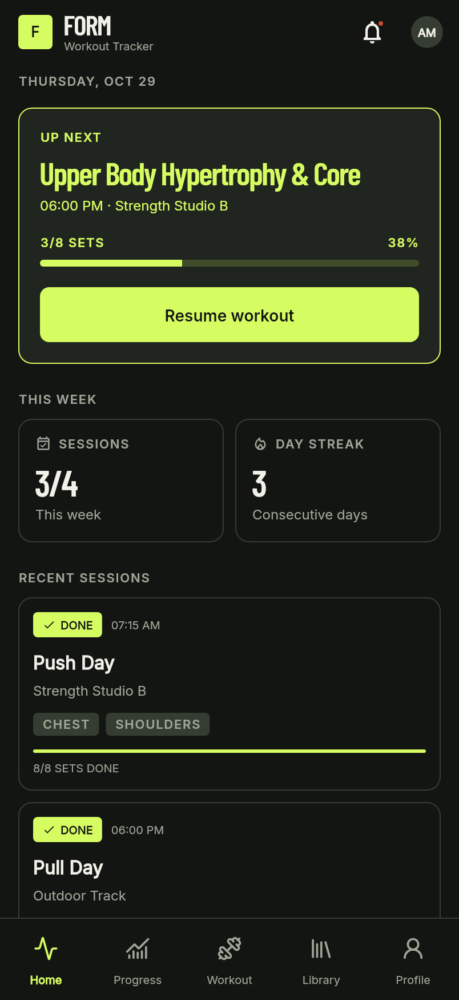 HomeThe session to walk into, the week, and what happened last. |
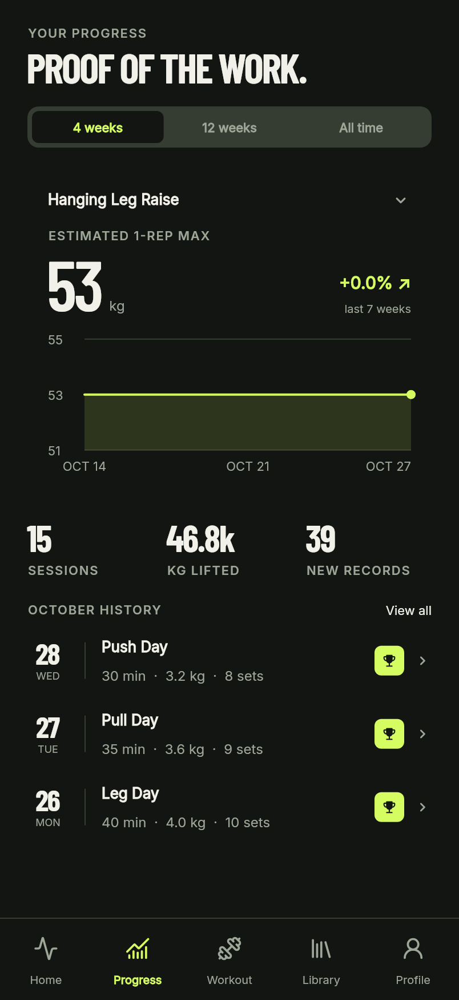 ProgressRecords, volume change and consistency, all derived. |
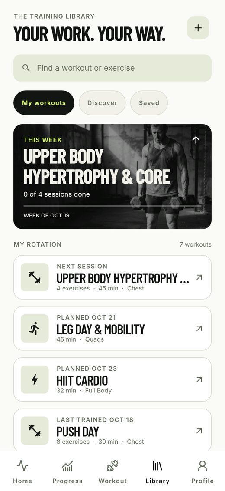 LibraryThe rotation, and a catalogue behind a search field. |
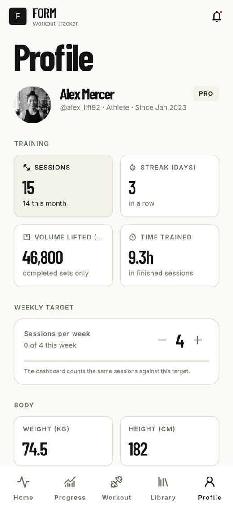 ProfileThe week's target, body metrics and the account. |
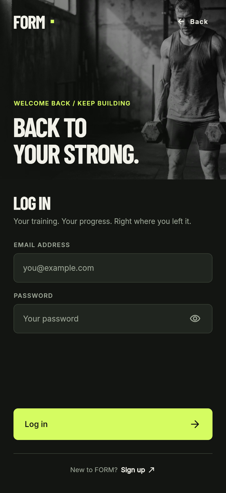 Sign inLocal accounts; the failure never says which half was wrong. |
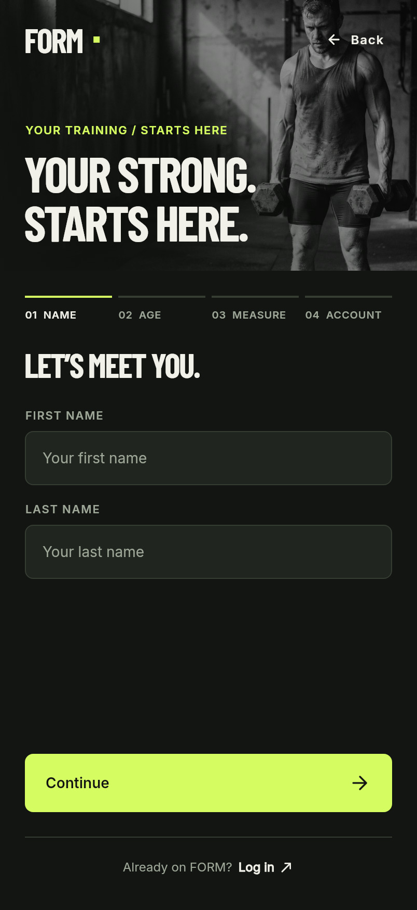 Create accountThe design's three steps, collapsed into one screen. |
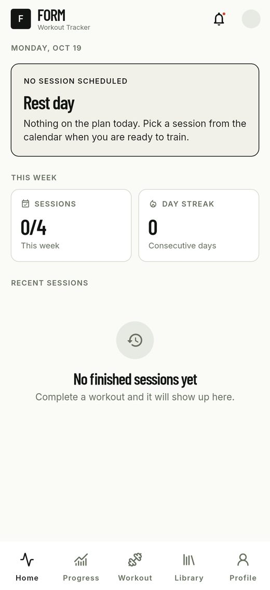 Empty accountWhat a fresh install shows: an invitation, not zeros. |
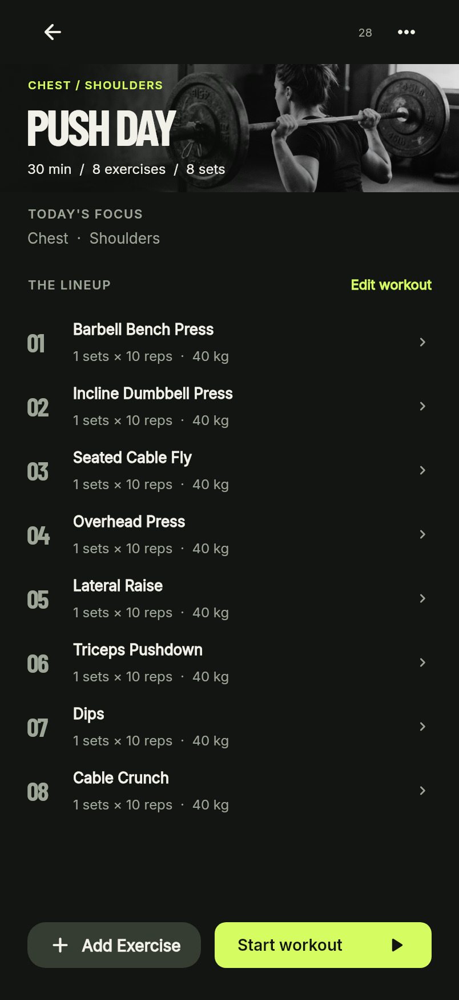 WorkoutThe plan, its focus and equipment, and where it is. |
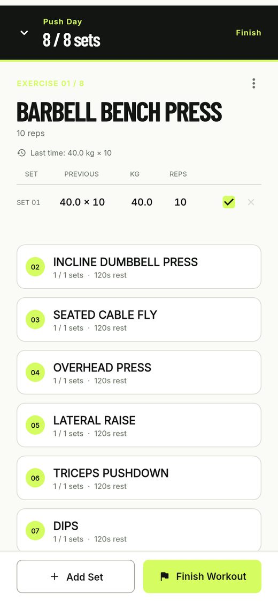 LoggingOne set at a time, with last time's numbers beside it. |
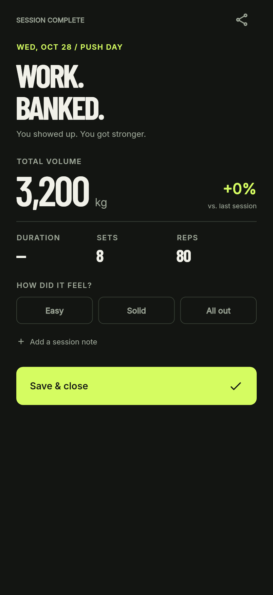 SummaryWhat the session was worth, and a record only if it beat one. |
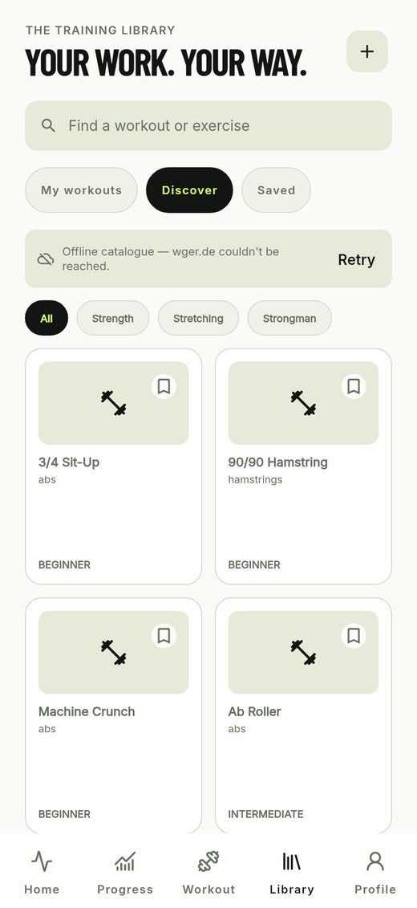 DiscoverThe network failing on purpose: banner, then the bundled catalogue. |
The concept is one sentence long: the app remembers, so the user can progress. Everything below follows from taking that sentence literally — a memory that is durable, private and honest, and a view of it that answers the next question.
FORM treats the training log as the only source of truth. A session, its exercises and its sets are stored; every other number in the app is computed from them on read. Nothing is stored twice, so nothing can go stale, and there is no “demo data” to explain away. An empty account is empty: the app says so and offers the first session, rather than printing a scoreboard of zeros.
| Step | What happens | What it is built on |
|---|---|---|
| 1. Enter | Continue offline or sign in. The chosen account owns everything that follows. | The auth seam and a per-account store |
| 2. Pick | Home names the session to walk into: the soonest planned session in this week that is not behind the user. | focusWorkoutThisWeek |
| 3. Log | Each exercise shows its sets, the last time it was trained, and a tick per set. The tick is the record. | toggleSet, previousSetsFor |
| 4. Finish | The last tick closes the session; the summary reports volume, sets, reps and any record. | SessionStats |
| 5. Reflect | Progress shows records ranked by estimated one-rep max, volume against the previous window, and consistency. | lib/data/session_stats.dart |
| 6. Extend | The Library adds sessions to the rotation and exercises to a saved list, using the live catalogue or the bundled one. | ExerciseCatalog, saved exercises |
WorkoutProvider holds the account's sessions and exposes derived
getters — the week's sessions, the streak, the session to walk into, the last
time an exercise was trained. Screens watch the provider and read those
getters; they never compute a shared figure themselves. This is the choice
that made the week bug in Section 6 possible to find: two screens disagreeing
meant two definitions existed, and the fix was to delete one and keep the
other in the provider.
Every write goes through WorkoutRepository, which is constructed
with a userId and cannot read or write a row without one. The
in-memory copy is treated as a cache: it is loaded before the first frame, and
writes are applied to it immediately and persisted behind it. A restart is
therefore an ordinary event, not a data-loss risk.
The catalogue is loaded by ExerciseCatalog, which asks wger first
and falls back to the bundled sets when the request fails, times out or
returns nothing. Screens see one result type with a flag saying where it came
from, so the offline case is a banner rather than an error screen.
Sign-in is local, behind an interface shaped like a server
(AuthRepository). Passwords are hashed with PBKDF2-HMAC-SHA256 on
a worker isolate, a sign-up answers either signed in or awaiting a
confirmation link (the shape Supabase Auth returns), and the account card can
change the password. A real backend could replace the implementation without a
screen changing, and the project avoids shipping a Firebase configuration file
in a public repository, which would be a credential in the APK.
A new account, a failed request, an unknown session id and an invalid field all have a written answer. None of them is a blank screen and none is a fabricated value.
No cloud sync, no social features, no vitals or calorie tracking. These are recorded as deliberate cuts in the README, and the reasoning is the same in each case: a surface with nothing behind it is a promise the app cannot keep.
Six objectives, each with the thing that would show it had been met. They are stated as outcomes rather than features because the project is graded on what the app can demonstrate, not on how much code it contains.
| # | Objective | Evidence that it was met |
|---|---|---|
| 1 | Make a session loggable in under a minute. The plan arrives with its sets, and each exercise shows what it was lifted at last time, so the user confirms rather than types. | The logging screen's PREVIOUS column and “Last time” line are computed from the store; a session of eight exercises needs eight ticks. |
| 2 | Make every figure traceable. Any number on any screen can be recomputed from the sessions the user recorded. | lib/data/session_stats.dart is the only place progress is computed, and its tests assert the counting rules directly. |
| 3 | Work without a network. Training and browsing the catalogue both survive a dead connection. | The bundled catalogue renders behind an “offline catalogue” banner with a retry; the Discover screenshot in Section 3 is that path. |
| 4 | Support accounts without a server. Two people can use one device with separate training, and no credential ships in the app. | Schema v4 gives every row an owner; switching accounts opens a different store and disposes the previous one; passwords are hashed, salted and iterated. |
| 5 | Be release-ready. Custom name, icon and splash; a working release APK; the steps written down. | docs/BUILD.md, the generated launcher icon and splash, and the APK built from master. |
| 6 | Practise the engineering, not only the programming. Branches, reviewed pull requests, issues, tests, a DevTools case, and documentation a stranger can follow. | More than thirty merged pull requests with inline review comments, ten issues closed, 293 tests, docs/DEVTOOLS.md. |
The project did not aim to be a social product, a nutrition tracker or a cloud service. It also did not aim for visual parity with every frame in the design file: the design's sign-up flow has three steps, and the delivered screen collapses them into one because the app has no age column and no reader for it. That deviation is documented rather than hidden, which is the standard the rest of the project is held to.
Every feature below is demonstrable in the running app. Where a screen needs a behaviour that is easy to fake — a record, a comparison, a streak — the feature section says what the number is derived from.
| Feature | What it does | Where |
|---|---|---|
| Session logging | Exercises with sets of reps and weight; a tick per set; the last tick closes the session, unticking reopens it. | set_logging_screen.dart |
| CRUD | Create, rename, reschedule and delete sessions; add and remove sets; edit the profile and body metrics; save and unsave exercises. | workout_provider.dart, workout_repository.dart |
| Progress from the log | Records ranked by estimated one-rep max, volume with the change against the previous window, and thirty-day consistency. | session_stats.dart |
| Last time's numbers | The logger shows the best set from the most recent finished session containing that exercise, and each row shows the matching set. | previousSetsFor |
| Weekly goal and streak | Finished sessions against a target the user can raise or lower; consecutive days with a finished session. | sessionsDoneThisWeek, streakDays |
| Exercise catalogue | Live wger data over http with search, muscle filters and a saved list; bundled fallback offline. | exercise_catalog.dart, library_screen.dart |
| Accounts | A local account with a hashed password or the device account; per-account training; change the password; sign out; delete with confirmation. | lib/auth/, schema v4 |
The assignment asks for at least three custom widgets used on more than one screen. FORM has sixteen; the ones that carry the most weight are:
| Widget | Used by | What it hides |
|---|---|---|
AppNavBar | All five tab screens | Five destinations, the raised centre action, and the selected state. |
SectionHeader | Home, progress, library, profile | The small-caps section label and its spacing. |
WorkoutCard | Home, library, profile | The status chip, the muscle tags, the progress rule and the date formatting. |
EmptyState | Home, progress, library | The icon, title and explanation that replace a blank list. |
AuthField | Sign in, create account | Label, obscure toggle, error text and focus behaviour. |
AuthAction | Welcome, sign in, create account | The busy state that disables the button and shows a spinner. |
ProgressBar | Home, profile, the workout card | The thin rule that shows how much of a session is done. |
StatTile | Home, progress, profile | The value-over-caption layout of a single figure. |
Rendering every screen for this paper found two defects that code review had not, both of the same kind: a number that had been invented rather than derived.
The week disagreed with itself. Home read the length of the
week's session list and the library counted finished sessions, so a week
holding four plans and no training showed 4/4 on the dashboard
and 0 of 4 sessions done in the library. The fix was to define
the number once, next to the window it counts
(sessionsDoneThisWeek), and have all three places read it.
The PREVIOUS column was a placeholder. The logging screen
drew a “previous” column and a “No previous data” line from fields nothing
ever wrote, so every exercise claimed to be new. It now asks the store for the
completed sets of the last finished session containing that exercise — a
feature that could not be tested before, because the fixtures named their
exercises Push Day Movement 4 and no name ever repeated.
Both screenshots in Section 3 were rendered after the fix: the weekly tile and the library's week card read the same getter, and the logger's PREVIOUS column is filled from the store.
Three areas carry the course: navigation, state management and API integration. For each one this section states what the app needed, how it was built — naming the files and classes — and what would be harder or broken without it.
Four kinds of movement: between the five destinations of the shell without rebuilding the app; from a list into a session, where the destination depends on an id; from a session into a logger and then a summary, without the user being able to walk back into a logger for a session that is already finished; and between entirely different windows when the user signs in or out.
The destinations are an enum, and each value owns its route name, its label and its icon, so the shell, the navigation bar and the route table cannot fall out of step:
enum AppTab { home, progress, workout, library, profile }
// lib/main.dart
for (final tab in AppTab.values) tab.routeName: (_) => AppShell(tab: tab),
Parameterised destinations are generated rather than registered, because a
route like /workout-detail/:id is not a fixed string:
static const String routeName = '/workout-detail'; static String routeFor(String id) => '$routeName/$id'; // resolved in PlusOneApp.routeFor, which reads the id off the settings case WorkoutDetailScreen.routeName: return MaterialPageRoute(builder: (_) => WorkoutDetailScreen(route: settings));
Data is passed as an id, not as an object. The list pushes
WorkoutDetailScreen.routeFor(workout.id); the detail screen reads
the id from its route settings and asks the provider for the session
(context.watch<WorkoutProvider>().byId(id)). That single
decision is what keeps a detail screen alive across a change: when a set is
ticked in the logger and the user walks back, the detail screen rebuilds from
the provider rather than showing a copy of the session that no longer matches
the store.
The last kind of movement is not a push at all. The gate in
lib/main.dart chooses a window — splash while the session is
being restored, the sign-in flow while signed out, the app while signed in —
and each window carries a distinct ValueKey. Replacing the window
instead of pushing onto it is what makes signing out leave no app screen on
the back stack, and signing in as somebody else leave no store from the
previous account listening.
Without the id-as-argument rule, a session would travel through constructors from the list to the logger to the summary, and every screen in the chain would hold a stale copy the moment a tick changed it. Without the window replacement, signing out would be a push, and the back button would walk into the account that just left.
Two kinds of shared state. Account state: is somebody signed in, who,
and what is the app allowed to show. Training state: the sessions,
the saved exercises, the profile, the weekly target, and every figure derived
from them. Both are read by many screens and written by a few, which is
exactly the shape provider exists for.
| Provider | Holds | Read by |
|---|---|---|
AuthProvider |
The session, a status (checking, signedOut, signedIn) and a busy flag; commands to create an account, sign in, continue offline, sign out and delete. |
The gate in main.dart, the welcome and sign-in screens, the profile's account section. |
WorkoutProvider |
Sessions, saved exercises, profile and metrics, plus derived getters: the week's sessions, the focus session, the streak, the count of finished sessions, the previous sets for an exercise. | Home, progress, workout, library and profile — every tab. |
Screens watch when they render a value and read when they
only call a command. A tap handler that called watch would
subscribe the screen to a rebuild it does not need; a build method that called
read would never update. The distinction is small in code and
large in behaviour, and it is applied consistently.
The store's lifetime is tied to the account, not to the app:
// lib/main.dart — one store per account, created and disposed by the widget ChangeNotifierProvider( key: ValueKey(userId), create: (_) => openStore(userId)..load(), )
The key is what makes signing in as someone else open their training rather than reuse the previous object, and it disposes the departed store with the widget that held it. A widget test asserts both halves, including that the old store throws when a listener is added after the switch.
Without a shared provider, the weekly figure would have to be passed from the shell to each tab, and the "last time" lookup would be repeated in the logger and the summary. That is not a style preference: passing state down a constructor chain is how two screens end up computing the same figure differently — which is precisely the defect described in Section 6, where the dashboard and the library each had their own definition of the week. With a single provider and a single getter, the second definition cannot exist without deleting the first.
Without the account-keyed provider, the app would either keep one store for the process (leaking one account's training into another's) or dispose nothing (leaving listeners on a dead notifier).
A catalogue of exercises the app does not have to invent, searchable by name and muscle, that still works when the phone has no signal in a basement gym.
FORM reads the public wger REST API
(https://wger.de/api/v2/) through
package:http. Reads need no API key.
GET https://wger.de/api/v2/exerciseinfo/?language=2&limit=60 Accept: application/json timeout: 8 s
The catalogue holds 932 entries; the app requests the first page of sixty, which is more than a scrolling grid will reach in one session. Language 2 is English.
A real response, abridged to the fields the app reads:
{
"count": 932,
"results": [
{
"id": 9,
"category": { "id": 10, "name": "Abs" },
"muscles": [
{ "id": 11, "name": "Biceps femoris", "name_en": "Hamstrings" }
],
"muscles_secondary": [
{ "id": 10, "name": "Quadriceps femoris", "name_en": "Quads" }
],
"equipment": [ { "id": 10, "name": "Kettlebell" } ],
"translations": [
{
"language": 2,
"name": "2 Handed Kettlebell Swing",
"description": "<p>Two Handed Russian Style Kettlebell swing</p>"
}
]
}
]
}
ExerciseApiClient._parse maps one entry onto
LibraryExercise — the same model the bundled data sets parse
into. It prefers the English translation and falls back to the first one, so a
German-only entry still appears; it joins muscle names, preferring
name_en over the Latin name; it flattens equipment objects to
names; and it strips HTML from descriptions, because the card shows plain
text. Entries with no usable translation are dropped rather than rendered
blank.
| State | What the user sees | Trigger |
|---|---|---|
| Loading | A progress indicator in the grid area; the header, search field and filter pills stay usable. | The request is in flight. |
| Success (network) | The catalogue, with the attribution line at the foot of the list. | HTTP 200 with at least one parsable result. |
| Fallback | The bundled catalogue plus a banner: “Offline catalogue — wger.de couldn't be reached. Retry”. | Timeout, socket error, non-200, invalid JSON, or an empty result list. |
| Error | An error state with a retry, only when both sources fail. | The bundled assets cannot be read either. |
Failures are collapsed into one ExerciseApiException at the
client boundary, so no screen deals in socket errors or status codes. The
policy — network first, bundled second, error only if both fail — lives in
ExerciseCatalog.load, which is tested on its own with a fake
client: a client that throws must produce a bundled result with
isOffline true, and a client that returns an empty list must do
the same.
Without the API, the catalogue would be whatever shipped in the assets — correct but frozen, and blind to exercises the user actually wants. Without the fallback, the library would be empty in the one place the app is used most. Without the collapse at the boundary, every screen with a catalogue would carry its own timeout handling and its own error copy, and they would drift.
The suite holds 293 tests. Three of them are worth naming because they test the parts that would be expensive to get wrong:
(userId, id).
Rewinding user_version on a current database would prove only
that the migration runs.
dart format --set-exit-if-changed and flutter analyze
are clean, and every commit in the history was required to be green on its
own.
The documented case is the release APK's size budget. Building with
--analyze-size and opening the analysis in DevTools' App Size
tool showed a 20 MB APK: 11.75 MB engine, 6.75 MB Dart AOT, 1.24 MB assets.
Inside the AOT, package:plus_one — every screen, provider,
repository and widget in the app — is 281 KB, while
flutter_svg and its parser stack are ≈380 KB for
five icons that total 1.1 KB on disk. The tool also confirmed that Material
icons tree-shake from 1.6 MB to 4.8 KB, so the icon font is not the cost it is
often assumed to be.
The decision was to keep flutter_svg — 1.9% of the APK, and
replacing the icon pipeline would be a design change disguised as an
optimisation — and to record it, with the order in which it would be cut if
the budget ever mattered. docs/DEVTOOLS.md also documents the
frame that a 12 000-iteration PBKDF2 verify blocked on the UI isolate (105 ms,
measured), and why that work now runs through compute.
| Package | Version | Used for |
|---|---|---|
provider | 6.1.5+1 | ChangeNotifier state shared across screens. |
sqflite | 2.4.4+1 | The local SQLite database, its schema and migrations. |
path | 1.9.1 | Platform-correct database paths. |
http | 1.6.0 | The wger REST client. |
crypto | 3.0.7 | HMAC-SHA256 for PBKDF2 password hashing. |
intl | 0.20.3 | Date formatting (weekdays, month names, relative weeks). |
google_fonts | 9.0.0 | Resolves Inter and Barlow Condensed from bundled assets. |
flutter_svg | 2.3.0 | Lucide interface icons drawn as vectors. |
equatable | 2.1.0 | Value equality on models, so tests compare meaning not identity. |
flutter_lints | 6.0.0 | The analyzer rule set. |
sqflite_common_ffi | 2.4.3 | Real SQLite in tests, without a device. |
flutter_launcher_icons | 0.14.4 | Generates the Android icon and its adaptive variant. |
flutter_native_splash | 2.4.8 | Generates the launch screen. |
| Source | Use and licence |
|---|---|
| wger REST API | /api/v2/exerciseinfo/ — the live exercise catalogue. CC BY-SA 3.0/4.0 per entry; attributed in the app and in docs/ATTRIBUTION.md. |
| exercemus/exercises | Bundled offline catalogue: tips, tempo and variations. MIT, © 2022 exercemus. |
| free-exercise-db | Bundled offline catalogue: images and level. The Unlicense (public domain). |
| Lucide | Interface icons. ISC licence. |
| Inter, Barlow Condensed | Typefaces, bundled as TTFs under the SIL Open Font License 1.1. |
provider, sqflite, http, crypto, google_fonts, flutter_svg package documentation on pub.dev.AI assistance was used during the project as a pair-programming and drafting assistant, under the author's direction: proposing implementations, writing boilerplate, reviewing diffs, and helping to draft documentation. Every change was reviewed, run and tested before it was committed, and the architecture, scope decisions, design mapping and the choices documented in this paper were made by the author. No AI tool generated the application's data, and no service handles the user's training data.
The agent used was OpenCode (open-source coding agent) running DeepSeek V4.1 Flash Free, in a terminal on Linux, with access to the repository and its test suite.